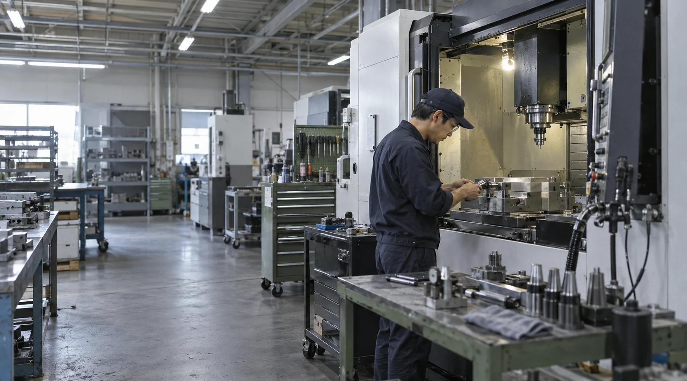
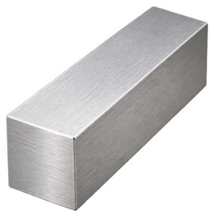
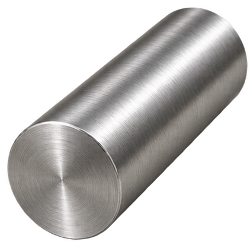
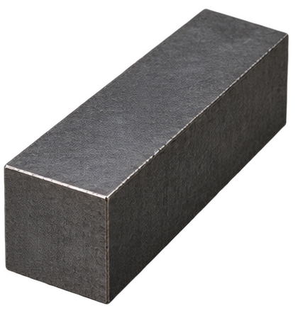
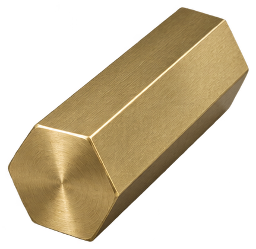
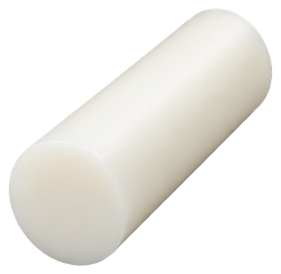
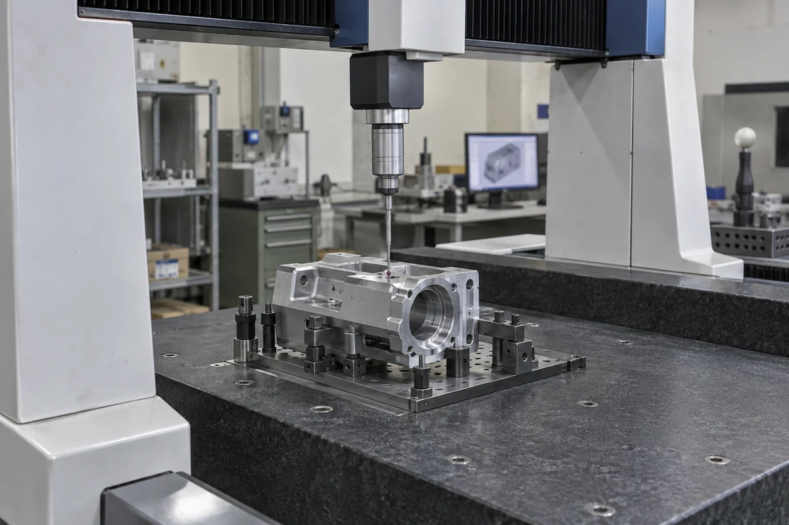
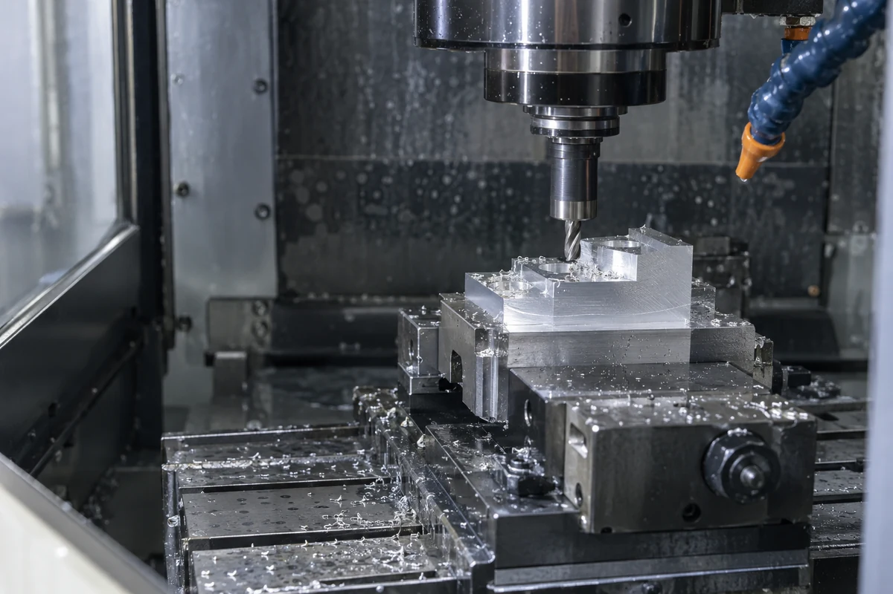
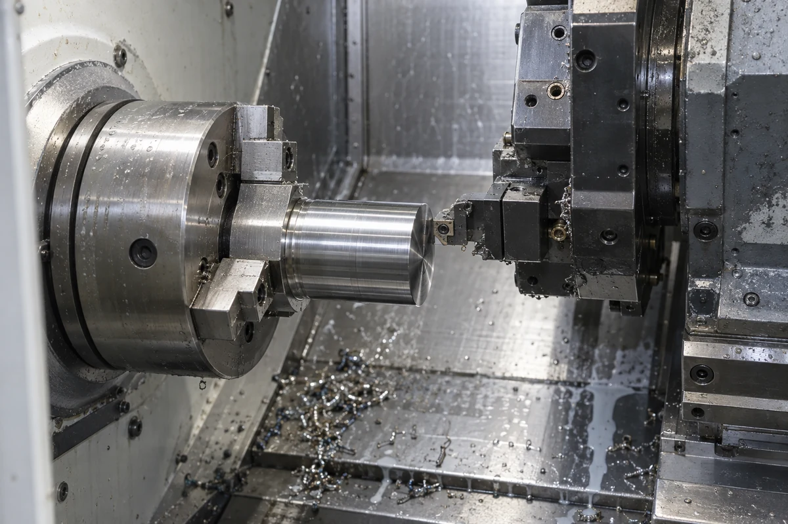

TECHNOLOGY & FACILITIES
つくれるかを、
工程から考える。
形状、基準面、保持方法、変形、検査。設備を選ぶ前に、案件に必要な工程を技術者が組み立てます。
PROCESS CAPABILITIES
加工単体ではなく、
組み合わせで応える。
- MC-01
切削
形状と基準面から段取りを検討
- TR-02
旋削
回転形状と二次工程を整理
- MX-03
複合加工
工程集約と持ち替えを削減
- ED-04
放電加工
切削困難形状の選択肢を用意
- FI-05
仕上げ・検査
最終状態から検査方法を設計
MATERIALS
材料の特性から、
加工条件を整える。
材質名だけで判断せず、用途、熱、変形、表面状態まで伺い、工程と検査の相談点を整理します。
- 01

アルミニウム
軽量・放熱・表面処理を含めて検討
- 02

ステンレス
加工硬化と熱の影響を考慮
- 03

鉄系材料
強度・処理・使用環境を整理
- 04

真鍮
切削性と外観品質のバランス
- 05

樹脂
熱変形と保持方法を事前確認
PROCESS PLANNING
加工前の判断が、
精度と手戻りを左右する。
- 01
形状を読む
薄肉・深穴・干渉を確認
- 02
基準を決める
基準面と測定方向を整理
- 03
保持を考える
変形を抑える掴み方を検討
- 04
工程を組む
持ち替えと順序を最適化
- 05
検査へつなぐ
測れる形と記録方法を確認
EQUIPMENT CATEGORIES
設備名より先に、
できることを伝える。
型式・台数・能力値は公開前に確定
- 01
5軸加工機
複雑形状を少ない持ち替えで加工
→ - 02
立形加工機
平面・穴・ポケット加工を柔軟に対応
→ - 03
NC旋盤
回転部品の外径・内径・端面を加工
→ - 04
ワイヤ放電加工機
微細形状や高硬度材の切り抜きに対応
→ - 05
三次元測定機
基準と形状を立体的に確認
→

QUALITY CONFIRMATION
測る工程まで、
加工の一部として考える。
加工中の確認、最終測定、記録の残し方までを案件ごとに整理します。未取得の認証や保証値ではなく、判断の手順を明確にします。
EQUIPMENT GALLERY
現場の流れを、写真で確認する。


自動移動中
 お問い合わせContact図面がなくても、分かる範囲からご相談ください。
お問い合わせContact図面がなくても、分かる範囲からご相談ください。